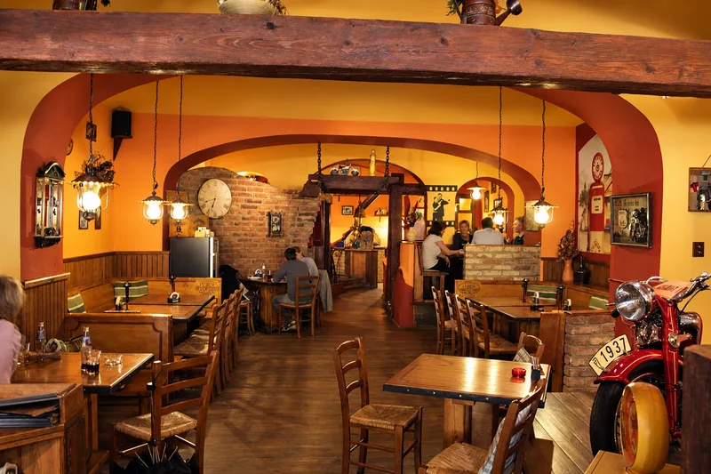
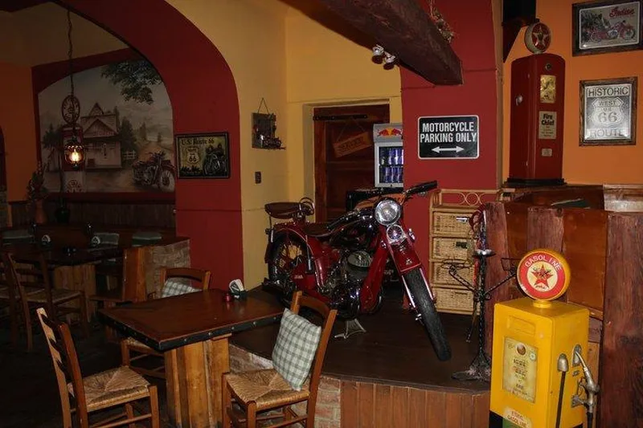
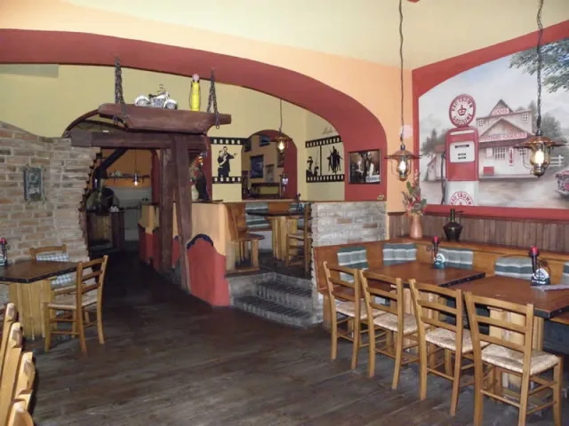
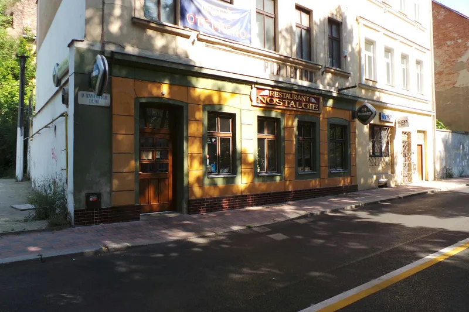

TEPLICE / U KAMENNÝCH LÁZNÍ
Dobré chvíle.Dobré jídlo.
Někdy stačí zpomalit. Sednout si ke stolu,
vybrat si něco dobrého a nikam nespěchat.
ČESKÉ SPECIALITY✦STEAKY✦PIZZA✦SPOLEČNÉ CHVÍLE

MÍSTO S CHARAKTEREM
Trocha retra.
Spousta
atmosféry.
Dřevo, cihlové oblouky a detaily, které mají co vyprávět. Nostalgie má své vlastní tempo — a místo pro váš oběd, večer s přáteli i společenské setkání.
DOMLUVIT NÁVŠTĚVU ↗NAHLÉDNĚTE K NÁM
Váš stůl.
Naše Nostalgie.


SLOVY NAŠICH HOSTŮ
Chutná nejlépe,
když se vracíte.
★★★★★Google
„Báječná restaurace s krásnou starou motorkou uvnitř! Všechno v nejlepším pořádku!“
★★★★★Google
„Jídlo jsem dostal téměř okamžitě a bylo výborné.“
Vybrané ohlasy našich hostů.Přečíst všechny recenze
OBĚD VE DVOU. VEČER S PŘÁTELI.
Uděláme vám
místo u stolu.
773 451 825 ↗Rezervace a společenské akce domluvíme telefonicky.